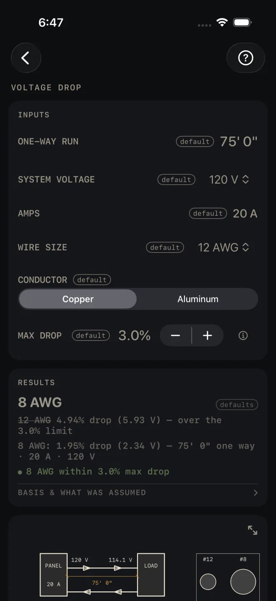

Voltage Drop
What it's for
A long run loses voltage in the wire. Enter the run, the load and the wire you plan to pull, and Voltage Drop tells you the drop in volts and percent, whether that is inside the limit you set, and the smallest listed size from yours upward that clears the limit and carries the amps. The limit is yours to set. It is a check on one run, with no material list.
Step by step
The example is the screen as it opens: a 75' 0" run, 20 A at 120 V, on 12 AWG copper, held to 3.0%.

1 2 3 4 5- ONE-WAY RUN — the length of cable from the panel to the load, one way, along the route the cable really takes. Do not double it. The calculator counts out and back for you. The example is 75' 0".
- SYSTEM VOLTAGE — 120, 208, 240, 277 or 480 V. The example is 120 V.
- AMPS — the load current. Tap it and type the number. The example is 20 A.
- WIRE SIZE — the size you plan to pull, from 14 AWG up to 4/0 AWG. The example is 12 AWG.
- CONDUCTOR — Copper or Aluminum.
- MAX DROP — the limit you are holding the run to, in steps of 0.5%. The example is 3.0%.
- Read RESULTS. The headline is the size that passes: 8 AWG. Under it, your own size is struck through with its drop, 12 AWG 4.94% drop (5.93 V) — over the 3.0% limit, then the passing size with its drop, 8 AWG: 1.95% drop (2.34 V).
- Tap BASIS & WHAT WAS ASSUMED to see what the recommended size was governed by, and the formula.
- Scroll down to the run drawing and its ladder of sizes.
Reading the results
![Voltage Drop results and drawing: headline 8 AWG, the struck-through 12 AWG line, the green check, the BASIS & WHAT WAS ASSUMED row, then a one-line drawing from PANEL 20 A to LOAD showing 120 V and 114.1 V over 75' 0", a ladder of sizes 12, 10, 8, 6, 4 with 4.9%, 3.1%, 2.0%, 1.2%, 0.8%, the limit line struck across 12 and 10 and 8 filled in, an inset comparing #12 at 6530 and #8 at 16510 circular mils, and notes including DROP 5.93 V = 4.94% · OVER LIMIT 3.0% (STRUCK) in red. SHARE PDF and SAVE at the bottom.](../shots/voltage-drop--results.webp) 7
8
9
7
8
9
The results card reads one of five ways.
- Your size passes. The headline is your WIRE SIZE, the line under it is its drop, and the green line reads Within 3.0% max drop, with your limit in it. Your size has met both tests: the drop, and carrying the AMPS.
- Your size passes the drop but cannot carry the amps. A 12 AWG copper on a 30 A load over 10' 0" drops under 1%, but the table rates it at 20 A. The headline is the size that carries the load, your size is struck through and reads rated 20 A @ 60 °C, under the 30 A load, and the red line reads 12 AWG CANNOT CARRY 30 A — NEC 310.16.
- Your size fails and a larger one passes. This is the example. The headline is the larger size, your size is struck through, and the green line names the size that is within the limit. The search starts at your size and only goes up.
- Nothing listed passes. The headline reads Even 4/0 AWG exceeds your limit and the red line reads EVEN 4/0 AWG EXCEEDS … LIMIT — REDUCE RUN LENGTH OR LOAD. The fix is a shorter ONE-WAY RUN, fewer AMPS, or a higher SYSTEM VOLTAGE if the equipment allows it.
- The load is too big for the list. The headline reads No listed size and the red line reads NO LISTED SIZE CARRIES … A — PARALLEL RUNS / ENGINEER SIZING. That one is not yours to fix on this screen.
One more red line can appear: 14 AWG NOT LISTED IN ALUMINUM — SMALLEST AL SIZE IS 12. Pick a larger WIRE SIZE or switch CONDUCTOR to Copper.
BASIS & WHAT WAS ASSUMED opens to the formula and a reminder that the limit is your own setting. When a size passes, a line above it says whether that size was set by the drop limit or had to go bigger to carry the current, and names the table it used. A recommended size always has to carry the AMPS as well as meet the drop.
The drawing is a one-line schematic, not to scale: panel to load and back, the voltage at each end on the wire you entered, and the one-way run. Under it is a ladder of sizes with the percent drop for each. One limit line strikes every size that misses the limit — here 12 and 10 — and stops where the answer starts. Your own size is the dashed cell and the passing size is filled in. The boxed inset draws the two conductors at their true relative area, in circular mils. The notes repeat the working: the out and back length, the wire you entered, the drop — in red when it is over the limit — the upsize, then the circuit type and the ampacity table it read. The last note on the drawing reads 3%/5% IS AN NEC INFORMATIONAL NOTE, NOT A VIOLATION. Pinch to zoom, drag to move around, double-tap to reset, or tap the expand button at its top right for the whole screen. See Reading the drawing.
There is no MATERIALS list. SHARE PDF stays dimmed until you change an input, then shares the drawing, the result and your inputs. SAVE puts the result in History. The PDF footer reads Estimate — verify dimensions and local code before cutting/ordering. Your local code and your inspector govern the conductor you install.
Common mistakes
- Entering the out-and-back length. ONE-WAY RUN is one way. The drawing shows the doubling: OUT + BACK: CIRCUIT = 2 × 75' 0" = 150' 0".
- Measuring the run in a straight line. Measure the route the cable takes, up, over and down.
- Leaving CONDUCTOR on Copper for an aluminum feeder. The same size drops more in aluminum.
Related
- Electrical — the rough-in takeoff whose cable row sends you here
- Water Heater
- Reading the drawing
- Cut sheets and templates
- Saving and History